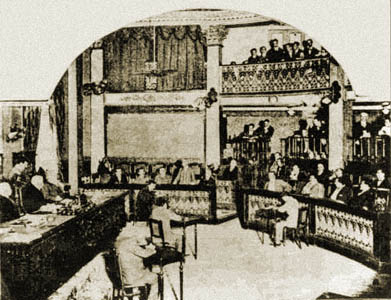
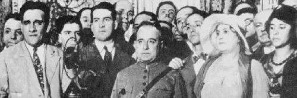
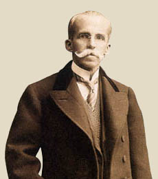

Edição Especial OAB
A criação da Ordem dos Advogados do Brasil
A Primeira República (1889-1930), não promoveu um aumento da participação popular no âmbito do sistema político.
Na ocasião, Rui Barbosa, que já havia sido derrotado nas eleições de 1910 e 1914, decidiu realizar um protesto, apresentando-se como candidato.
A Revolução de 1930 fez nascer um novo Estado, que se distanciou do modelo oligárquico pelo caráter centralizador e pela maior autonomia. Foi o caso dos profissionais liberais e dos jovens políticos que, antes de 1930, formaram a Aliança Liberal e articularam o golpe de estado, como Getúlio Vargas, Osvaldo Aranha, Flores da Cunha, Lindolfo Collor e Francisco Campos, entre outros.
Foi nesse contexto, e em sintonia com as aspirações de renovação e modernização do País, que se deu a criação da Ordem dos Advogados do Brasil, tendo como personagem central a figura do então procurador-geral do Distrito Federal, André de Faria Pereira.
Logo depois de instalado o Governo Provisório, André de Faria Pereira expôs a Osvaldo Aranha, então ministro da Justiça, a necessidade de modificar a organização da Corte de Apelação, visando à normalização dos seus serviços e ao aumento da produtividade de seus julgamentos. Incumbido pelo ministro de organizar um projeto de decreto, o procurador-geral, há muito sócio do Instituto dos Advogados, incluiu o dispositivo do art. 17, criando a Ordem dos Advogados. O êxito da iniciativa foi, segundo ele, um milagre.


Foto do plenário do Senado durante sessão no ano de 1915, vendo-se o Senador Rui Barbosa de pé, discursando de frente para a Mesa Diretora.
Revista Singra, publicada pelo Correio da Manhã
Foto do plenário do Senado durante sessão no ano de 1915, vendo-se o Senador Rui Barbosa de pé, discursando de frente para a Mesa Diretora.
Revista Singra, publicada pelo Correio da Manhã

Getúlio Vargas no Palácio do Catete em 31/10/1930
Getúlio Vargas no Palácio do Catete em 31/10/1930

RUI BARBOSA
RUI BARBOSA
Comentário de André de Faria Pereira
André de Faria Pereira, na 792.ª sessão da 25.ª Reunião Ordinária do Conselho Federal da Ordem dos Advogados do Brasil, ocorrida em 22/11/1955 afirmou:
"A criação da Ordem dos Advogados, naquele momento histórico, constituiu um verdadeiro milagre, em que hoje eu mesmo custo a acreditar. Em verdade, ao mesmo tempo em que a derrocada das Instituições rasgava, pela revolução vitoriosa, a Constituição e as leis e concentrava nas mãos do ditador os três poderes constitucionais da República, ferindo o próprio Poder Judiciário, no momento em que a insânia do poder pessoal se instalava no País, com todas as agravantes do arbítrio e da violência, foram subtraídas à centralização dominante e entregues a órgãos da própria classe a disciplina e seleção de seus membros."
A instituição da Ordem dos Advogados do Brasil ocorreu, então, quase um século após a fundação do Instituto dos Advogados, por força do art. 17 do Decreto no 19.408, de 18 de novembro de 1930, assinado por Getúlio Vargas, chefe do Governo Provisório, e referendado pelo ministro da Justiça Osvaldo Aranha.
Decreto no 19.408, de 18 de novembro de 1930 - art. 17
Art. 17. Fica criada a Ordem dos Advogados Brasileiros, órgão de disciplina e seleção da classe dos advogados, que se regerá pelos estatutos que forem votados pelo Instituto da Ordem dos Advogados Brasileiros, com a colaboração dos Institutos dos Estados, e aprovados pelo Governo.

OSVALDO ARANHA
Comunicação Social - Jornalismo
Legislação e Ética no Jornalismo: Denis Policani
Alunas: Ayla Ueda, Bruna Presmic, Fernanda Ferraz, Karina Martin e Mariana Thomaz